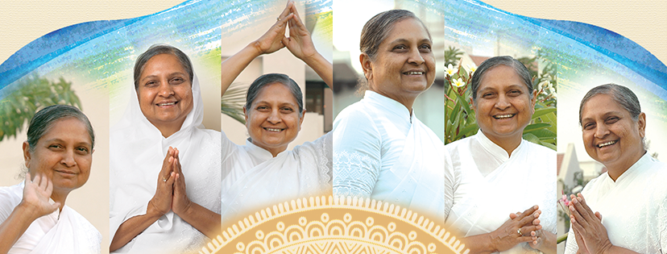
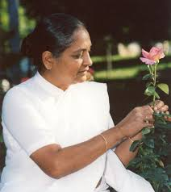
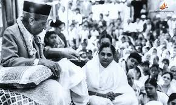

निरुबेन अमीन (2 दिसंबर 1944 - 19 मार्च 2006), जिन्हें उनके अनुयायी पूज्य निरुमा के नाम से संबोधित करते थे, एक भारतीय आध्यात्मिक नेता और अक्रम विज्ञान दर्शन के प्रतिपादक थे। पेशे से स्त्री रोग विशेषज्ञ, वह अपने अध्ययन के वर्षों के दौरान दादा भगवान की शिष्या बन गईं।
Niruben Amin (2 December 1944 – 19 March 2006), addressed as Pujya Niruma by her followers, was an Indian spiritual leader and an exponent of the Akram Vignan philosophy. A gynecologist by profession, she became a disciple of Dada Bhagwan during her study years.

Pujya Dr. Niruben Amin, also lovingly called Pujya Niruma, was born
December 2nd, 1944 in Aurangabad, Maharashtra, India to one of the
wealthiest families in the region. She was the only daughter after 5
sons, due to which her family showered her with lots of love and
affection. From young age, Niruma knew she wanted to be a doctor to
serve mankind. Her main priority was to serve and the desire to earn
money never arose in her. She set out to complete her goal and graduated
with a medical degree in Gynecology from Aurangabad Medical College.
It was during her final year in medical college, that one of her elder
brothers told her about Pujya Dadashri, who is a Gnani Purush (a Self
realized soul), who can give people Self realization in 2 hours, upon
which no worldly happiness, unhappiness, or suffering can touch you.
This touched Pujya Niruma’s heart and she thought what could be greater
than achieving freedom from worldly sufferings in 2 hours?’
She went to meet Pujya Dadashri for the first time at his house in
Baroda on June 29, 1968. Upon seeing him, she felt as if she had known
him for many lifetimes and was finally reunited. At the same time, the
strong desire spontaneously arose in Pujya Niruma that it would be great
if I could be in Pujya Dadashri’s devotional service until my last
breath. With that she heartily surrendered herself at the feet of the
Gnani.
Once Pujya Dadashri asked Pujya Niruma: “What is your goal? Is the goal
to live with Dadashri or is there any other goal?” To which Pujya Niruma
answered: “To live with Pujya Dadashri and work for the salvation of the
world (jagat kalyan).”
